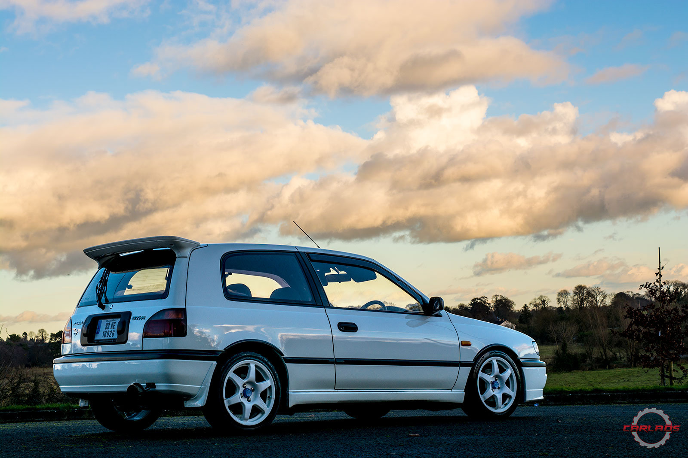
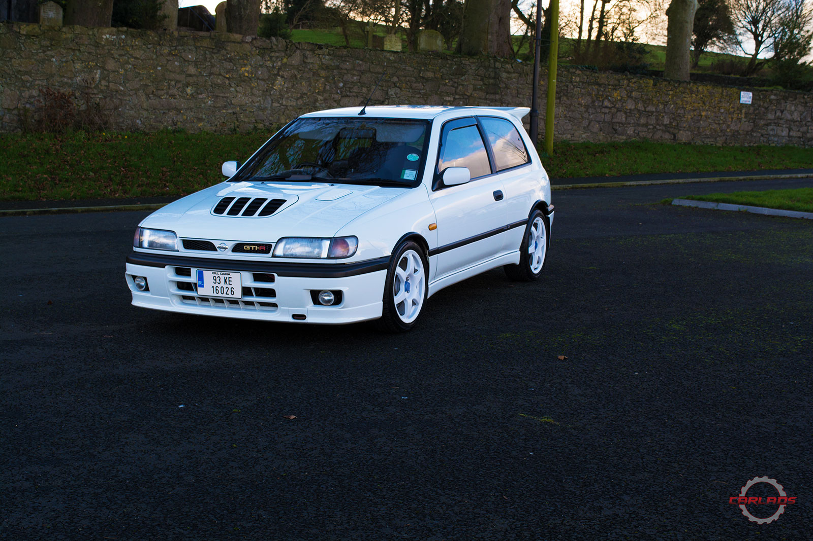
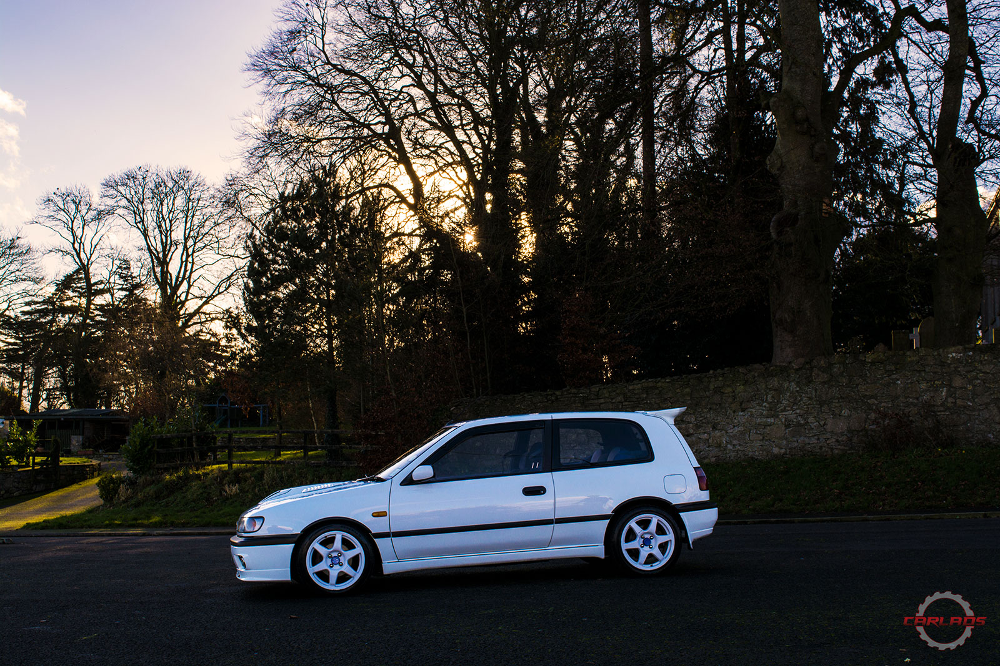
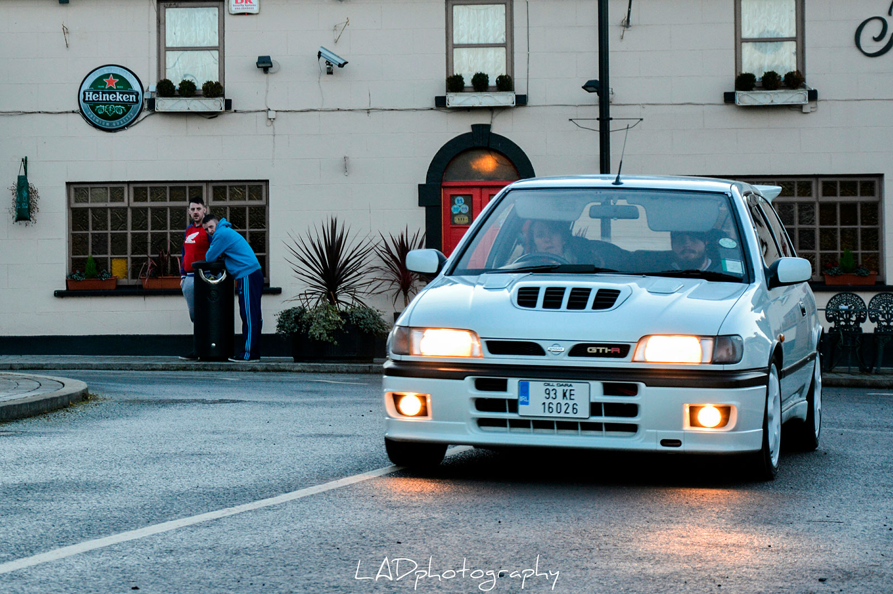

Nissan Pulsar GTi-R
We don't have much information about this car since the owner just bought it a few weeks ago. We do know the lucky guy that has it in his garage. Next to this perfect condition Pulsar, sits the 4 door Nissan Skyline R34, the one featured in an article from a few days back.
Mick is telling us that his desire for this car goes back 15 years ago, when one of his friends had one and he just loved the aggressive bonnet vent, the big spoiler and the overall look of the car. It is pretty fast for today's standards, 15 years back though, it was considered a ballistic missile capable of shattering anything in it's range. Keep in mind that the GTi-R was produced in order to enter the WRC under Group A rules. The 227hp SR20DET, helped by the AWD manages to push this car from 0-100kph in about 5 seconds. Having a power to weight ration of 0.083 also helps. A lot!
15 years ago Mick could not afford such a car, let alone insuring it, so owning a Pulsar was just a dream. But growing up has it's perks, about six months ago he realized he can now afford one, now is the time to make a dream come true.
He wanted either a red or a white one, but chances to find one were slim to none. Plan B was to buy a black one and maybe have it painted in the desired colour. Long days of searching online and loads of trips to view different cars followed, at one point Mick managed to get all the way to Glasgow hoping to buy a mint GTi-R. No luck though, patience and morale were wearing thin too and the thought of giving up was already pushing from the back of Mick's head.
Good thing he didn't. Upon returning from the disappointing trip to Glasgow, he decided to give it one last try, this time on a Facebook group. And there it was, a white, great condition Pulsar in Guernsey. It took about a week of phone calls and text messages to convince the woman selling the car to meet with Mick and his mechanic friend in Portsmouth. But it happened, and after a good look, he bought the car, booked an 8:30 PM ferry back to Ireland and drove it home.
This might have been one of the best drives ever. Imagine driving what is, in essence, a fast rally car that you just bought after about 15 years of just dreaming about it.
Mich is, indeed, a lucky guy.
